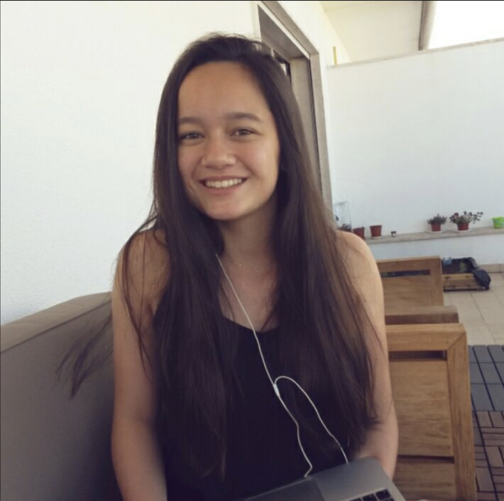
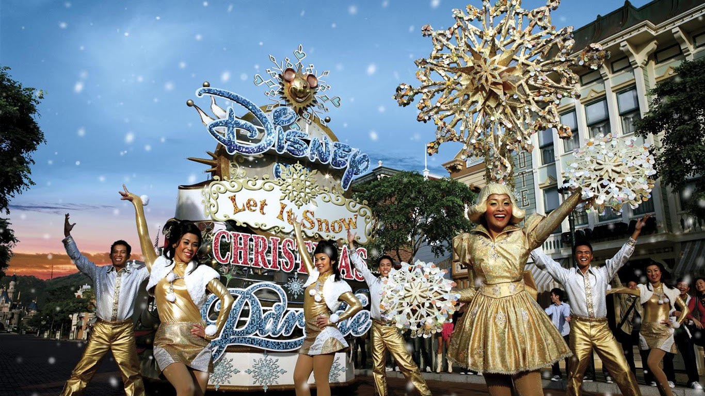

Hello, I'm Anne
Salut à tous ! Je m'appelle Anne et je suis étudiante au programme BBA de l'Essec. J'adore la culture asiatique, voyager et les voitures. De plus, j'apprend cette année à coder avec Le Wagon.
Ecoutez ça ! :
KobaLaD - Demain J'arrêteCulture asiatique
Ayant grandi dans une famille de culture asiatique, j'y suis très attachée. J'ai fait plusieurs fois le tour de l'asie.
Défilé du nouvel an
Tokyo
Le Vietnam
Voyager
Depuis petit je voyage avec mes parents. Comme je l'ai dit plus haut, j'ai visité l'Asie, mais notamment les Etats-Unis, L'Afrique du Nord et l'Italie
Los Angeles
Tanger

Venise

Voitures
Grâce à mon frère j'ai pu m'interesser très jeune au monde automobile. J'adore les voitures de luxe, notamment les Bugatti Veyron